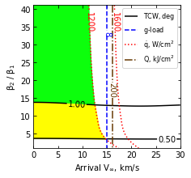
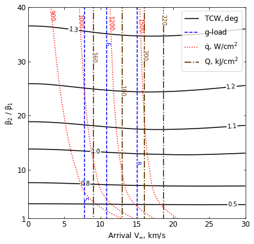

10 - b - Neptune - Feasibility Charts - Drag¶
[1]:
from AMAT.planet import Planet
from AMAT.vehicle import Vehicle
import numpy as np
from scipy import interpolate
import matplotlib.pyplot as plt
from matplotlib import rcParams
from matplotlib.patches import Polygon
import os
[2]:
# Create a planet object for Titan
planet=Planet("NEPTUNE")
planet.h_skip = 1000e3
planet.h_trap = 50e3
# Load an nominal atmospheric profile with height, temp, pressure, density data
planet.loadAtmosphereModel('../atmdata/Neptune/neptune-gram-avg.dat', 0 , 7 , 6, 5, heightInKmFlag=True)
[3]:
beta1 = 20.0
runID = 'neptune-drag-'
[9]:
vinf_kms_array = np.linspace( 0.0, 30.0, 11)
betaRatio_array = np.linspace( 1.0, 41.0 , 11)
[10]:
v0_kms_array = np.zeros(len(vinf_kms_array))
v0_kms_array[:] = np.sqrt(1.0*(vinf_kms_array[:]*1E3)**2.0 + 2*np.ones(len(vinf_kms_array))*\
planet.GM/(planet.RP+1000.0*1.0E3))/1.0E3
overShootLimit_array = np.zeros((len(v0_kms_array),len(betaRatio_array)))
underShootLimit_array = np.zeros((len(v0_kms_array),len(betaRatio_array)))
exitflag_os_array = np.zeros((len(v0_kms_array),len(betaRatio_array)))
exitflag_us_array = np.zeros((len(v0_kms_array),len(betaRatio_array)))
TCW_array = np.zeros((len(v0_kms_array),len(betaRatio_array)))
[11]:
for i in range(0,len(v0_kms_array)):
for j in range(0,len(betaRatio_array)):
vehicle=Vehicle('DMVehicle', 300.0, beta1, 0.0, 3.1416, 0.0, 0.10, planet)
vehicle.setInitialState(1000.0,0.0,0.0,v0_kms_array[i],0.0,-4.5,0.0,0.0)
vehicle.setSolverParams(1E-6)
vehicle.setDragModulationVehicleParams(beta1,betaRatio_array[j])
underShootLimit_array[i,j], exitflag_us_array[i,j] = vehicle.findUnderShootLimitD(2400.0, 1.0, -20.0,-4.0,1E-10,4000)
overShootLimit_array[i,j] , exitflag_os_array[i,j] = vehicle.findOverShootLimitD (2400.0, 1.0, -20.0,-4.0,1E-10,4000)
TCW_array[i,j] = overShootLimit_array[i,j] - underShootLimit_array[i,j]
print('VINF: '+str(vinf_kms_array[i])+' km/s, BETA RATIO: '+str(betaRatio_array[j])+' TCW: '+str(TCW_array[i,j])+' deg.')
np.savetxt('../data/jsr-paper/neptune/'+runID+'vinf_kms_array.txt',vinf_kms_array)
np.savetxt('../data/jsr-paper/neptune/'+runID+'v0_kms_array.txt',v0_kms_array)
np.savetxt('../data/jsr-paper/neptune/'+runID+'betaRatio_array.txt',betaRatio_array)
np.savetxt('../data/jsr-paper/neptune/'+runID+'overShootLimit_array.txt',overShootLimit_array)
np.savetxt('../data/jsr-paper/neptune/'+runID+'exitflag_os_array.txt',exitflag_os_array)
np.savetxt('../data/jsr-paper/neptune/'+runID+'underShootLimit_array.txt',underShootLimit_array)
np.savetxt('../data/jsr-paper/neptune/'+runID+'exitflag_us_array.txt',exitflag_us_array)
np.savetxt('../data/jsr-paper/neptune/'+runID+'TCW_array.txt',TCW_array)
VINF: 0.0 km/s, BETA RATIO: 1.0 TCW: 0.0 deg.
VINF: 0.0 km/s, BETA RATIO: 5.0 TCW: 0.6375848139286973 deg.
VINF: 0.0 km/s, BETA RATIO: 9.0 TCW: 0.8520057675777934 deg.
VINF: 0.0 km/s, BETA RATIO: 13.0 TCW: 0.9789272253401577 deg.
VINF: 0.0 km/s, BETA RATIO: 17.0 TCW: 1.0667038679821417 deg.
VINF: 0.0 km/s, BETA RATIO: 21.0 TCW: 1.1342695139464922 deg.
VINF: 0.0 km/s, BETA RATIO: 25.0 TCW: 1.1892026141867973 deg.
VINF: 0.0 km/s, BETA RATIO: 29.0 TCW: 1.2345585543080233 deg.
VINF: 0.0 km/s, BETA RATIO: 33.0 TCW: 1.2715580430813134 deg.
VINF: 0.0 km/s, BETA RATIO: 37.0 TCW: 1.3034544690744951 deg.
VINF: 0.0 km/s, BETA RATIO: 41.0 TCW: 1.3314950732165016 deg.
VINF: 3.0 km/s, BETA RATIO: 1.0 TCW: 0.0 deg.
VINF: 3.0 km/s, BETA RATIO: 5.0 TCW: 0.6390480915433727 deg.
VINF: 3.0 km/s, BETA RATIO: 9.0 TCW: 0.8538084520841949 deg.
VINF: 3.0 km/s, BETA RATIO: 13.0 TCW: 0.9805327534559183 deg.
VINF: 3.0 km/s, BETA RATIO: 17.0 TCW: 1.068393432884477 deg.
VINF: 3.0 km/s, BETA RATIO: 21.0 TCW: 1.1360414182418026 deg.
VINF: 3.0 km/s, BETA RATIO: 25.0 TCW: 1.191082521690987 deg.
VINF: 3.0 km/s, BETA RATIO: 29.0 TCW: 1.2360145408310927 deg.
VINF: 3.0 km/s, BETA RATIO: 33.0 TCW: 1.2729238573811017 deg.
VINF: 3.0 km/s, BETA RATIO: 37.0 TCW: 1.3047426943085156 deg.
VINF: 3.0 km/s, BETA RATIO: 41.0 TCW: 1.3328057203325443 deg.
VINF: 6.0 km/s, BETA RATIO: 1.0 TCW: 0.0 deg.
VINF: 6.0 km/s, BETA RATIO: 5.0 TCW: 0.6430133717367426 deg.
VINF: 6.0 km/s, BETA RATIO: 9.0 TCW: 0.8588578948401846 deg.
VINF: 6.0 km/s, BETA RATIO: 13.0 TCW: 0.9848885684041306 deg.
VINF: 6.0 km/s, BETA RATIO: 17.0 TCW: 1.0730263691511936 deg.
VINF: 6.0 km/s, BETA RATIO: 21.0 TCW: 1.1409201623755507 deg.
VINF: 6.0 km/s, BETA RATIO: 25.0 TCW: 1.1960456015076488 deg.
VINF: 6.0 km/s, BETA RATIO: 29.0 TCW: 1.2397645485471003 deg.
VINF: 6.0 km/s, BETA RATIO: 33.0 TCW: 1.2765348782995716 deg.
VINF: 6.0 km/s, BETA RATIO: 37.0 TCW: 1.308246121450793 deg.
VINF: 6.0 km/s, BETA RATIO: 41.0 TCW: 1.33629093633499 deg.
VINF: 9.0 km/s, BETA RATIO: 1.0 TCW: 0.0 deg.
VINF: 9.0 km/s, BETA RATIO: 5.0 TCW: 0.6481621066923253 deg.
VINF: 9.0 km/s, BETA RATIO: 9.0 TCW: 0.8649483202607371 deg.
VINF: 9.0 km/s, BETA RATIO: 13.0 TCW: 0.990505404653959 deg.
VINF: 9.0 km/s, BETA RATIO: 17.0 TCW: 1.0791003896738403 deg.
VINF: 9.0 km/s, BETA RATIO: 21.0 TCW: 1.1475800550542772 deg.
VINF: 9.0 km/s, BETA RATIO: 25.0 TCW: 1.201097839686554 deg.
VINF: 9.0 km/s, BETA RATIO: 29.0 TCW: 1.244129801983945 deg.
VINF: 9.0 km/s, BETA RATIO: 33.0 TCW: 1.2806589678511955 deg.
VINF: 9.0 km/s, BETA RATIO: 37.0 TCW: 1.3122983945067972 deg.
VINF: 9.0 km/s, BETA RATIO: 41.0 TCW: 1.3402841428178363 deg.
VINF: 12.0 km/s, BETA RATIO: 1.0 TCW: 0.0 deg.
VINF: 12.0 km/s, BETA RATIO: 5.0 TCW: 0.6535135280573741 deg.
VINF: 12.0 km/s, BETA RATIO: 9.0 TCW: 0.8703192648245022 deg.
VINF: 12.0 km/s, BETA RATIO: 13.0 TCW: 0.9961540620424785 deg.
VINF: 12.0 km/s, BETA RATIO: 17.0 TCW: 1.0851889830082655 deg.
VINF: 12.0 km/s, BETA RATIO: 21.0 TCW: 1.153116102446802 deg.
VINF: 12.0 km/s, BETA RATIO: 25.0 TCW: 1.2049986543715931 deg.
VINF: 12.0 km/s, BETA RATIO: 29.0 TCW: 1.2477177278487943 deg.
VINF: 12.0 km/s, BETA RATIO: 33.0 TCW: 1.2840427142800763 deg.
VINF: 12.0 km/s, BETA RATIO: 37.0 TCW: 1.3156785692553967 deg.
VINF: 12.0 km/s, BETA RATIO: 41.0 TCW: 1.343776410794817 deg.
VINF: 15.0 km/s, BETA RATIO: 1.0 TCW: 0.0 deg.
VINF: 15.0 km/s, BETA RATIO: 5.0 TCW: 0.6583897554082796 deg.
VINF: 15.0 km/s, BETA RATIO: 9.0 TCW: 0.8746284047956578 deg.
VINF: 15.0 km/s, BETA RATIO: 13.0 TCW: 1.0008890533354133 deg.
VINF: 15.0 km/s, BETA RATIO: 17.0 TCW: 1.090546931605786 deg.
VINF: 15.0 km/s, BETA RATIO: 21.0 TCW: 1.1558287351508625 deg.
VINF: 15.0 km/s, BETA RATIO: 25.0 TCW: 1.2071400129352696 deg.
VINF: 15.0 km/s, BETA RATIO: 29.0 TCW: 1.249661518551875 deg.
VINF: 15.0 km/s, BETA RATIO: 33.0 TCW: 1.285915323998779 deg.
VINF: 15.0 km/s, BETA RATIO: 37.0 TCW: 1.317741370294243 deg.
VINF: 15.0 km/s, BETA RATIO: 41.0 TCW: 1.3462270107702352 deg.
VINF: 18.0 km/s, BETA RATIO: 1.0 TCW: 0.0 deg.
VINF: 18.0 km/s, BETA RATIO: 5.0 TCW: 0.6623215390718542 deg.
VINF: 18.0 km/s, BETA RATIO: 9.0 TCW: 0.8774400072870776 deg.
VINF: 18.0 km/s, BETA RATIO: 13.0 TCW: 1.0041766694630496 deg.
VINF: 18.0 km/s, BETA RATIO: 17.0 TCW: 1.0923478612094186 deg.
VINF: 18.0 km/s, BETA RATIO: 21.0 TCW: 1.1562853277428076 deg.
VINF: 18.0 km/s, BETA RATIO: 25.0 TCW: 1.2072475993190892 deg.
VINF: 18.0 km/s, BETA RATIO: 29.0 TCW: 1.249606179422699 deg.
VINF: 18.0 km/s, BETA RATIO: 33.0 TCW: 1.286075644835364 deg.
VINF: 18.0 km/s, BETA RATIO: 37.0 TCW: 1.3182956944219768 deg.
VINF: 18.0 km/s, BETA RATIO: 41.0 TCW: 1.3472154243499972 deg.
VINF: 21.0 km/s, BETA RATIO: 1.0 TCW: 0.0 deg.
VINF: 21.0 km/s, BETA RATIO: 5.0 TCW: 0.6653561519924551 deg.
VINF: 21.0 km/s, BETA RATIO: 9.0 TCW: 0.8788535002968274 deg.
VINF: 21.0 km/s, BETA RATIO: 13.0 TCW: 1.0061556307482533 deg.
VINF: 21.0 km/s, BETA RATIO: 17.0 TCW: 1.0913771499181166 deg.
VINF: 21.0 km/s, BETA RATIO: 21.0 TCW: 1.1546839770162478 deg.
VINF: 21.0 km/s, BETA RATIO: 25.0 TCW: 1.2054080093512312 deg.
VINF: 21.0 km/s, BETA RATIO: 29.0 TCW: 1.2478727445122786 deg.
VINF: 21.0 km/s, BETA RATIO: 33.0 TCW: 1.2847831092658453 deg.
VINF: 21.0 km/s, BETA RATIO: 37.0 TCW: 1.317405759880785 deg.
VINF: 21.0 km/s, BETA RATIO: 41.0 TCW: 1.3465530135435984 deg.
VINF: 24.0 km/s, BETA RATIO: 1.0 TCW: 0.0 deg.
VINF: 24.0 km/s, BETA RATIO: 5.0 TCW: 0.6663401488913223 deg.
VINF: 24.0 km/s, BETA RATIO: 9.0 TCW: 0.8791100586531684 deg.
VINF: 24.0 km/s, BETA RATIO: 13.0 TCW: 1.005341351905372 deg.
VINF: 24.0 km/s, BETA RATIO: 17.0 TCW: 1.0886956052854657 deg.
VINF: 24.0 km/s, BETA RATIO: 21.0 TCW: 1.151609547669068 deg.
VINF: 24.0 km/s, BETA RATIO: 25.0 TCW: 1.2022204327513464 deg.
VINF: 24.0 km/s, BETA RATIO: 29.0 TCW: 1.2450603127363138 deg.
VINF: 24.0 km/s, BETA RATIO: 33.0 TCW: 1.2823460045037791 deg.
VINF: 24.0 km/s, BETA RATIO: 37.0 TCW: 1.3152180758188479 deg.
VINF: 24.0 km/s, BETA RATIO: 41.0 TCW: 1.3445671580848284 deg.
VINF: 27.0 km/s, BETA RATIO: 1.0 TCW: 0.0 deg.
VINF: 27.0 km/s, BETA RATIO: 5.0 TCW: 0.6657166357617825 deg.
VINF: 27.0 km/s, BETA RATIO: 9.0 TCW: 0.8781609628931619 deg.
VINF: 27.0 km/s, BETA RATIO: 13.0 TCW: 1.0021717826020904 deg.
VINF: 27.0 km/s, BETA RATIO: 17.0 TCW: 1.0846570065477863 deg.
VINF: 27.0 km/s, BETA RATIO: 21.0 TCW: 1.1471899877651595 deg.
VINF: 27.0 km/s, BETA RATIO: 25.0 TCW: 1.1980153587646782 deg.
VINF: 27.0 km/s, BETA RATIO: 29.0 TCW: 1.2412443747743964 deg.
VINF: 27.0 km/s, BETA RATIO: 33.0 TCW: 1.2787534632370807 deg.
VINF: 27.0 km/s, BETA RATIO: 37.0 TCW: 1.3117533933836967 deg.
VINF: 27.0 km/s, BETA RATIO: 41.0 TCW: 1.3413693814072758 deg.
VINF: 30.0 km/s, BETA RATIO: 1.0 TCW: 0.0 deg.
VINF: 30.0 km/s, BETA RATIO: 5.0 TCW: 0.6647003521793522 deg.
VINF: 30.0 km/s, BETA RATIO: 9.0 TCW: 0.877015758829657 deg.
VINF: 30.0 km/s, BETA RATIO: 13.0 TCW: 0.998286928399466 deg.
VINF: 30.0 km/s, BETA RATIO: 17.0 TCW: 1.0800643479451537 deg.
VINF: 30.0 km/s, BETA RATIO: 21.0 TCW: 1.1424313343595713 deg.
VINF: 30.0 km/s, BETA RATIO: 25.0 TCW: 1.1936049461946823 deg.
VINF: 30.0 km/s, BETA RATIO: 29.0 TCW: 1.2370840602670796 deg.
VINF: 30.0 km/s, BETA RATIO: 33.0 TCW: 1.2747062221751548 deg.
VINF: 30.0 km/s, BETA RATIO: 37.0 TCW: 1.3079548389650881 deg.
VINF: 30.0 km/s, BETA RATIO: 41.0 TCW: 1.3376443205634132 deg.
[12]:
acc_net_g_max_array = np.zeros((len(v0_kms_array),len(betaRatio_array)))
stag_pres_atm_max_array = np.zeros((len(v0_kms_array),len(betaRatio_array)))
q_stag_total_max_array = np.zeros((len(v0_kms_array),len(betaRatio_array)))
heatload_max_array = np.zeros((len(v0_kms_array),len(betaRatio_array)))
for i in range(0,len(v0_kms_array)):
for j in range(0,len(betaRatio_array)):
vehicle=Vehicle('DMVehicle', 300, beta1, 0.0, 3.1416, 0.0, 0.10, planet)
vehicle.setInitialState(1000.0,0.0,0.0,v0_kms_array[i],0.0,overShootLimit_array[i,j],0.0,0.0)
vehicle.setSolverParams(1E-6)
vehicle.propogateEntry (2400.0, 1.0, 0.0)
# Extract and save variables to plot
t_min_os = vehicle.t_minc
h_km_os = vehicle.h_kmc
acc_net_g_os = vehicle.acc_net_g
q_stag_con_os = vehicle.q_stag_con
q_stag_rad_os = vehicle.q_stag_rad
rc_os = vehicle.rc
vc_os = vehicle.vc
stag_pres_atm_os = vehicle.computeStagPres(rc_os,vc_os)/(1.01325E5)
heatload_os = vehicle.heatload
vehicle=Vehicle('DMVehicle', 300.0, beta1, 0.0, 3.1416, 0.0, 0.10, planet)
vehicle.setInitialState(1000.0,0.0,0.0,v0_kms_array[i],0.0,underShootLimit_array[i,j],0.0,0.0)
vehicle.setSolverParams( 1E-6)
vehicle.propogateEntry (2400.0, 1.0, 0.0)
# Extract and save variable to plot
t_min_us = vehicle.t_minc
h_km_us = vehicle.h_kmc
acc_net_g_us = vehicle.acc_net_g
q_stag_con_us = vehicle.q_stag_con
q_stag_rad_us = vehicle.q_stag_rad
rc_us = vehicle.rc
vc_us = vehicle.vc
stag_pres_atm_us = vehicle.computeStagPres(rc_us,vc_us)/(1.01325E5)
heatload_us = vehicle.heatload
q_stag_total_os = q_stag_con_os + q_stag_rad_os
q_stag_total_us = q_stag_con_us + q_stag_rad_us
acc_net_g_max_array[i,j] = max(max(acc_net_g_os),max(acc_net_g_os))
stag_pres_atm_max_array[i,j] = max(max(stag_pres_atm_os),max(stag_pres_atm_os))
q_stag_total_max_array[i,j] = max(max(q_stag_total_os),max(q_stag_total_us))
heatload_max_array[i,j] = max(max(heatload_os),max(heatload_os))
print("V_infty: "+str(vinf_kms_array[i])+" km/s"+", BR: "+str(betaRatio_array[j])+" G_MAX: "+str(acc_net_g_max_array[i,j])+" QDOT_MAX: "+str(q_stag_total_max_array[i,j])+" J_MAX: "+str(heatload_max_array[i,j])+" STAG. PRES: "+str(stag_pres_atm_max_array[i,j]))
np.savetxt('../data/jsr-paper/neptune/'+runID+'acc_net_g_max_array.txt',acc_net_g_max_array)
np.savetxt('../data/jsr-paper/neptune/'+runID+'stag_pres_atm_max_array.txt',stag_pres_atm_max_array)
np.savetxt('../data/jsr-paper/neptune/'+runID+'q_stag_total_max_array.txt',q_stag_total_max_array)
np.savetxt('../data/jsr-paper/neptune/'+runID+'heatload_max_array.txt',heatload_max_array)
V_infty: 0.0 km/s, BR: 1.0 G_MAX: 3.945877323449913 QDOT_MAX: 568.0827394979598 J_MAX: 139918.89106855224 STAG. PRES: 0.007656906120344463
V_infty: 0.0 km/s, BR: 5.0 G_MAX: 3.945877323449913 QDOT_MAX: 745.9223822130251 J_MAX: 139918.89106855224 STAG. PRES: 0.007656906120344463
V_infty: 0.0 km/s, BR: 9.0 G_MAX: 3.945877323449913 QDOT_MAX: 790.9853234927449 J_MAX: 139918.89106855224 STAG. PRES: 0.007656906120344463
V_infty: 0.0 km/s, BR: 13.0 G_MAX: 3.945877323449913 QDOT_MAX: 815.3462223957772 J_MAX: 139918.89106855224 STAG. PRES: 0.007656906120344463
V_infty: 0.0 km/s, BR: 17.0 G_MAX: 3.945877323449913 QDOT_MAX: 831.8046712532644 J_MAX: 139918.89106855224 STAG. PRES: 0.007656906120344463
V_infty: 0.0 km/s, BR: 21.0 G_MAX: 3.945877323449913 QDOT_MAX: 843.9128963456635 J_MAX: 139918.89106855224 STAG. PRES: 0.007656906120344463
V_infty: 0.0 km/s, BR: 25.0 G_MAX: 3.945877323449913 QDOT_MAX: 853.3939101813759 J_MAX: 139918.89106855224 STAG. PRES: 0.007656906120344463
V_infty: 0.0 km/s, BR: 29.0 G_MAX: 3.945877323449913 QDOT_MAX: 861.0329847937968 J_MAX: 139918.89106855224 STAG. PRES: 0.007656906120344463
V_infty: 0.0 km/s, BR: 33.0 G_MAX: 3.945877323449913 QDOT_MAX: 867.0466776750925 J_MAX: 139918.89106855224 STAG. PRES: 0.007656906120344463
V_infty: 0.0 km/s, BR: 37.0 G_MAX: 3.945877323449913 QDOT_MAX: 872.1356987547548 J_MAX: 139918.89106855224 STAG. PRES: 0.007656906120344463
V_infty: 0.0 km/s, BR: 41.0 G_MAX: 3.945877323449913 QDOT_MAX: 876.5472823444674 J_MAX: 139918.89106855224 STAG. PRES: 0.007656906120344463
V_infty: 3.0 km/s, BR: 1.0 G_MAX: 4.0987798911359645 QDOT_MAX: 584.9177486982629 J_MAX: 142222.06622714002 STAG. PRES: 0.007953405925762488
V_infty: 3.0 km/s, BR: 5.0 G_MAX: 4.0987798911359645 QDOT_MAX: 765.6929511200557 J_MAX: 142222.06622714002 STAG. PRES: 0.007953405925762488
V_infty: 3.0 km/s, BR: 9.0 G_MAX: 4.0987798911359645 QDOT_MAX: 811.4982505025773 J_MAX: 142222.06622714002 STAG. PRES: 0.007953405925762488
V_infty: 3.0 km/s, BR: 13.0 G_MAX: 4.0987798911359645 QDOT_MAX: 836.2890502662805 J_MAX: 142222.06622714002 STAG. PRES: 0.007953405925762488
V_infty: 3.0 km/s, BR: 17.0 G_MAX: 4.0987798911359645 QDOT_MAX: 853.065275191417 J_MAX: 142222.06622714002 STAG. PRES: 0.007953405925762488
V_infty: 3.0 km/s, BR: 21.0 G_MAX: 4.0987798911359645 QDOT_MAX: 865.422354651391 J_MAX: 142222.06622714002 STAG. PRES: 0.007953405925762488
V_infty: 3.0 km/s, BR: 25.0 G_MAX: 4.0987798911359645 QDOT_MAX: 874.973883130524 J_MAX: 142222.06622714002 STAG. PRES: 0.007953405925762488
V_infty: 3.0 km/s, BR: 29.0 G_MAX: 4.0987798911359645 QDOT_MAX: 882.6395942599461 J_MAX: 142222.06622714002 STAG. PRES: 0.007953405925762488
V_infty: 3.0 km/s, BR: 33.0 G_MAX: 4.0987798911359645 QDOT_MAX: 888.8183144928672 J_MAX: 142222.06622714002 STAG. PRES: 0.007953405925762488
V_infty: 3.0 km/s, BR: 37.0 G_MAX: 4.0987798911359645 QDOT_MAX: 893.9819232622069 J_MAX: 142222.06622714002 STAG. PRES: 0.007953405925762488
V_infty: 3.0 km/s, BR: 41.0 G_MAX: 4.0987798911359645 QDOT_MAX: 898.5598983645666 J_MAX: 142222.06622714002 STAG. PRES: 0.007953405925762488
V_infty: 6.0 km/s, BR: 1.0 G_MAX: 4.5690732099631255 QDOT_MAX: 635.9367284840146 J_MAX: 148991.6325654108 STAG. PRES: 0.008865195635716711
V_infty: 6.0 km/s, BR: 5.0 G_MAX: 4.5690732099631255 QDOT_MAX: 825.6869098011862 J_MAX: 148991.6325654108 STAG. PRES: 0.008865195635716711
V_infty: 6.0 km/s, BR: 9.0 G_MAX: 4.5690732099631255 QDOT_MAX: 873.7247664854045 J_MAX: 148991.6325654108 STAG. PRES: 0.008865195635716711
V_infty: 6.0 km/s, BR: 13.0 G_MAX: 4.5690732099631255 QDOT_MAX: 899.9652753014393 J_MAX: 148991.6325654108 STAG. PRES: 0.008865195635716711
V_infty: 6.0 km/s, BR: 17.0 G_MAX: 4.5690732099631255 QDOT_MAX: 917.5954668266777 J_MAX: 148991.6325654108 STAG. PRES: 0.008865195635716711
V_infty: 6.0 km/s, BR: 21.0 G_MAX: 4.5690732099631255 QDOT_MAX: 930.4308112930647 J_MAX: 148991.6325654108 STAG. PRES: 0.008865195635716711
V_infty: 6.0 km/s, BR: 25.0 G_MAX: 4.5690732099631255 QDOT_MAX: 940.5313539291762 J_MAX: 148991.6325654108 STAG. PRES: 0.008865195635716711
V_infty: 6.0 km/s, BR: 29.0 G_MAX: 4.5690732099631255 QDOT_MAX: 948.3976371038387 J_MAX: 148991.6325654108 STAG. PRES: 0.008865195635716711
V_infty: 6.0 km/s, BR: 33.0 G_MAX: 4.5690732099631255 QDOT_MAX: 954.7904602239671 J_MAX: 148991.6325654108 STAG. PRES: 0.008865195635716711
V_infty: 6.0 km/s, BR: 37.0 G_MAX: 4.5690732099631255 QDOT_MAX: 960.2903845379175 J_MAX: 148991.6325654108 STAG. PRES: 0.008865195635716711
V_infty: 6.0 km/s, BR: 41.0 G_MAX: 4.5690732099631255 QDOT_MAX: 965.047952094096 J_MAX: 148991.6325654108 STAG. PRES: 0.008865195635716711
V_infty: 9.0 km/s, BR: 1.0 G_MAX: 5.35701056286058 QDOT_MAX: 722.8942442262013 J_MAX: 159891.6959449069 STAG. PRES: 0.010392577734529165
V_infty: 9.0 km/s, BR: 5.0 G_MAX: 5.35701056286058 QDOT_MAX: 927.912223314843 J_MAX: 159891.6959449069 STAG. PRES: 0.010392577734529165
V_infty: 9.0 km/s, BR: 9.0 G_MAX: 5.35701056286058 QDOT_MAX: 979.7952934326344 J_MAX: 159891.6959449069 STAG. PRES: 0.010392577734529165
V_infty: 9.0 km/s, BR: 13.0 G_MAX: 5.35701056286058 QDOT_MAX: 1008.4126844064808 J_MAX: 159891.6959449069 STAG. PRES: 0.010392577734529165
V_infty: 9.0 km/s, BR: 17.0 G_MAX: 5.35701056286058 QDOT_MAX: 1027.4674802015606 J_MAX: 159891.6959449069 STAG. PRES: 0.010392577734529165
V_infty: 9.0 km/s, BR: 21.0 G_MAX: 5.35701056286058 QDOT_MAX: 1041.4330461064753 J_MAX: 159891.6959449069 STAG. PRES: 0.010392577734529165
V_infty: 9.0 km/s, BR: 25.0 G_MAX: 5.35701056286058 QDOT_MAX: 1052.0270092017963 J_MAX: 159891.6959449069 STAG. PRES: 0.010392577734529165
V_infty: 9.0 km/s, BR: 29.0 G_MAX: 5.35701056286058 QDOT_MAX: 1060.3150144342867 J_MAX: 159891.6959449069 STAG. PRES: 0.010392577734529165
V_infty: 9.0 km/s, BR: 33.0 G_MAX: 5.35701056286058 QDOT_MAX: 1067.3079337495835 J_MAX: 159891.6959449069 STAG. PRES: 0.010392577734529165
V_infty: 9.0 km/s, BR: 37.0 G_MAX: 5.35701056286058 QDOT_MAX: 1073.2291370550083 J_MAX: 159891.6959449069 STAG. PRES: 0.010392577734529165
V_infty: 9.0 km/s, BR: 41.0 G_MAX: 5.35701056286058 QDOT_MAX: 1078.3854181958286 J_MAX: 159891.6959449069 STAG. PRES: 0.010392577734529165
V_infty: 12.0 km/s, BR: 1.0 G_MAX: 6.478683685333229 QDOT_MAX: 850.3361491267822 J_MAX: 174518.42356161517 STAG. PRES: 0.012566735278104707
V_infty: 12.0 km/s, BR: 5.0 G_MAX: 6.478683685333229 QDOT_MAX: 1075.790450241139 J_MAX: 174518.42356161517 STAG. PRES: 0.012566735278104707
V_infty: 12.0 km/s, BR: 9.0 G_MAX: 6.478683685333229 QDOT_MAX: 1133.527298719978 J_MAX: 174518.42356161517 STAG. PRES: 0.012566735278104707
V_infty: 12.0 km/s, BR: 13.0 G_MAX: 6.478683685333229 QDOT_MAX: 1165.283702249116 J_MAX: 174518.42356161517 STAG. PRES: 0.012566735278104707
V_infty: 12.0 km/s, BR: 17.0 G_MAX: 6.478683685333229 QDOT_MAX: 1186.2113578495398 J_MAX: 174518.42356161517 STAG. PRES: 0.012566735278104707
V_infty: 12.0 km/s, BR: 21.0 G_MAX: 6.478683685333229 QDOT_MAX: 1201.6321086346259 J_MAX: 174518.42356161517 STAG. PRES: 0.012566735278104707
V_infty: 12.0 km/s, BR: 25.0 G_MAX: 6.478683685333229 QDOT_MAX: 1213.047841696979 J_MAX: 174518.42356161517 STAG. PRES: 0.012566735278104707
V_infty: 12.0 km/s, BR: 29.0 G_MAX: 6.478683685333229 QDOT_MAX: 1222.2402381536863 J_MAX: 174518.42356161517 STAG. PRES: 0.012566735278104707
V_infty: 12.0 km/s, BR: 33.0 G_MAX: 6.478683685333229 QDOT_MAX: 1229.956680855297 J_MAX: 174518.42356161517 STAG. PRES: 0.012566735278104707
V_infty: 12.0 km/s, BR: 37.0 G_MAX: 6.478683685333229 QDOT_MAX: 1236.5380631930034 J_MAX: 174518.42356161517 STAG. PRES: 0.012566735278104707
V_infty: 12.0 km/s, BR: 41.0 G_MAX: 6.478683685333229 QDOT_MAX: 1242.314308330653 J_MAX: 174518.42356161517 STAG. PRES: 0.012566735278104707
V_infty: 15.0 km/s, BR: 1.0 G_MAX: 7.965097699637164 QDOT_MAX: 1022.0881800765426 J_MAX: 192654.4345678489 STAG. PRES: 0.015447195076072406
V_infty: 15.0 km/s, BR: 5.0 G_MAX: 7.965097699637164 QDOT_MAX: 1274.6657694335938 J_MAX: 192654.4345678489 STAG. PRES: 0.015447195076072406
V_infty: 15.0 km/s, BR: 9.0 G_MAX: 7.965097699637164 QDOT_MAX: 1340.1914041298212 J_MAX: 192654.4345678489 STAG. PRES: 0.015447195076072406
V_infty: 15.0 km/s, BR: 13.0 G_MAX: 7.965097699637164 QDOT_MAX: 1375.990553623435 J_MAX: 192654.4345678489 STAG. PRES: 0.015447195076072406
V_infty: 15.0 km/s, BR: 17.0 G_MAX: 7.965097699637164 QDOT_MAX: 1399.6687339051841 J_MAX: 192654.4345678489 STAG. PRES: 0.015447195076072406
V_infty: 15.0 km/s, BR: 21.0 G_MAX: 7.965097699637164 QDOT_MAX: 1416.3687195178636 J_MAX: 192654.4345678489 STAG. PRES: 0.015447195076072406
V_infty: 15.0 km/s, BR: 25.0 G_MAX: 7.965097699637164 QDOT_MAX: 1429.1209240936487 J_MAX: 192654.4345678489 STAG. PRES: 0.015447195076072406
V_infty: 15.0 km/s, BR: 29.0 G_MAX: 7.965097699637164 QDOT_MAX: 1439.625274104397 J_MAX: 192654.4345678489 STAG. PRES: 0.015447195076072406
V_infty: 15.0 km/s, BR: 33.0 G_MAX: 7.965097699637164 QDOT_MAX: 1448.1447951775287 J_MAX: 192654.4345678489 STAG. PRES: 0.015447195076072406
V_infty: 15.0 km/s, BR: 37.0 G_MAX: 7.965097699637164 QDOT_MAX: 1455.8581113525802 J_MAX: 192654.4345678489 STAG. PRES: 0.015447195076072406
V_infty: 15.0 km/s, BR: 41.0 G_MAX: 7.965097699637164 QDOT_MAX: 1462.5963624964331 J_MAX: 192654.4345678489 STAG. PRES: 0.015447195076072406
V_infty: 18.0 km/s, BR: 1.0 G_MAX: 9.835192837988128 QDOT_MAX: 1245.8388067102183 J_MAX: 214507.38703820095 STAG. PRES: 0.01907069087891247
V_infty: 18.0 km/s, BR: 5.0 G_MAX: 9.835192837988128 QDOT_MAX: 1533.05435309262 J_MAX: 214507.38703820095 STAG. PRES: 0.01907069087891247
V_infty: 18.0 km/s, BR: 9.0 G_MAX: 9.835192837988128 QDOT_MAX: 1608.121976965627 J_MAX: 214507.38703820095 STAG. PRES: 0.01907069087891247
V_infty: 18.0 km/s, BR: 13.0 G_MAX: 9.835192837988128 QDOT_MAX: 1649.042295850994 J_MAX: 214507.38703820095 STAG. PRES: 0.01907069087891247
V_infty: 18.0 km/s, BR: 17.0 G_MAX: 9.835192837988128 QDOT_MAX: 1675.6396555622398 J_MAX: 214507.38703820095 STAG. PRES: 0.01907069087891247
V_infty: 18.0 km/s, BR: 21.0 G_MAX: 9.835192837988128 QDOT_MAX: 1694.3951824840158 J_MAX: 214507.38703820095 STAG. PRES: 0.01907069087891247
V_infty: 18.0 km/s, BR: 25.0 G_MAX: 9.835192837988128 QDOT_MAX: 1709.0814692417127 J_MAX: 214507.38703820095 STAG. PRES: 0.01907069087891247
V_infty: 18.0 km/s, BR: 29.0 G_MAX: 9.835192837988128 QDOT_MAX: 1721.0546541307895 J_MAX: 214507.38703820095 STAG. PRES: 0.01907069087891247
V_infty: 18.0 km/s, BR: 33.0 G_MAX: 9.835192837988128 QDOT_MAX: 1731.1338267341855 J_MAX: 214507.38703820095 STAG. PRES: 0.01907069087891247
V_infty: 18.0 km/s, BR: 37.0 G_MAX: 9.835192837988128 QDOT_MAX: 1740.1257898149506 J_MAX: 214507.38703820095 STAG. PRES: 0.01907069087891247
V_infty: 18.0 km/s, BR: 41.0 G_MAX: 9.835192837988128 QDOT_MAX: 1748.0476954400613 J_MAX: 214507.38703820095 STAG. PRES: 0.01907069087891247
V_infty: 21.0 km/s, BR: 1.0 G_MAX: 12.108058919261142 QDOT_MAX: 1539.5680868511465 J_MAX: 241185.87349073094 STAG. PRES: 0.023473916094379033
V_infty: 21.0 km/s, BR: 5.0 G_MAX: 12.108058919261142 QDOT_MAX: 1866.8541130596632 J_MAX: 241185.87349073094 STAG. PRES: 0.023473916094379033
V_infty: 21.0 km/s, BR: 9.0 G_MAX: 12.108058919261142 QDOT_MAX: 1952.3079061132428 J_MAX: 241185.87349073094 STAG. PRES: 0.023473916094379033
V_infty: 21.0 km/s, BR: 13.0 G_MAX: 12.108058919261142 QDOT_MAX: 1999.9459910371534 J_MAX: 241185.87349073094 STAG. PRES: 0.023473916094379033
V_infty: 21.0 km/s, BR: 17.0 G_MAX: 12.108058919261142 QDOT_MAX: 2029.9100794968406 J_MAX: 241185.87349073094 STAG. PRES: 0.023473916094379033
V_infty: 21.0 km/s, BR: 21.0 G_MAX: 12.108058919261142 QDOT_MAX: 2051.652033814984 J_MAX: 241185.87349073094 STAG. PRES: 0.023473916094379033
V_infty: 21.0 km/s, BR: 25.0 G_MAX: 12.108058919261142 QDOT_MAX: 2068.554880235714 J_MAX: 241185.87349073094 STAG. PRES: 0.023473916094379033
V_infty: 21.0 km/s, BR: 29.0 G_MAX: 12.108058919261142 QDOT_MAX: 2082.2869637244385 J_MAX: 241185.87349073094 STAG. PRES: 0.023473916094379033
V_infty: 21.0 km/s, BR: 33.0 G_MAX: 12.108058919261142 QDOT_MAX: 2094.5051159324344 J_MAX: 241185.87349073094 STAG. PRES: 0.023473916094379033
V_infty: 21.0 km/s, BR: 37.0 G_MAX: 12.108058919261142 QDOT_MAX: 2104.959559425219 J_MAX: 241185.87349073094 STAG. PRES: 0.023473916094379033
V_infty: 21.0 km/s, BR: 41.0 G_MAX: 12.108058919261142 QDOT_MAX: 2114.011305650152 J_MAX: 241185.87349073094 STAG. PRES: 0.023473916094379033
V_infty: 24.0 km/s, BR: 1.0 G_MAX: 14.796854707666292 QDOT_MAX: 1944.3513767375637 J_MAX: 275804.310432894 STAG. PRES: 0.028682076481098873
V_infty: 24.0 km/s, BR: 5.0 G_MAX: 14.796854707666292 QDOT_MAX: 2315.939735649085 J_MAX: 275804.310432894 STAG. PRES: 0.028682076481098873
V_infty: 24.0 km/s, BR: 9.0 G_MAX: 14.796854707666292 QDOT_MAX: 2411.811895769572 J_MAX: 275804.310432894 STAG. PRES: 0.028682076481098873
V_infty: 24.0 km/s, BR: 13.0 G_MAX: 14.796854707666292 QDOT_MAX: 2466.9572313848407 J_MAX: 275804.310432894 STAG. PRES: 0.028682076481098873
V_infty: 24.0 km/s, BR: 17.0 G_MAX: 14.796854707666292 QDOT_MAX: 2502.198862339169 J_MAX: 275804.310432894 STAG. PRES: 0.028682076481098873
V_infty: 24.0 km/s, BR: 21.0 G_MAX: 14.796854707666292 QDOT_MAX: 2527.3259642482553 J_MAX: 275804.310432894 STAG. PRES: 0.028682076481098873
V_infty: 24.0 km/s, BR: 25.0 G_MAX: 14.796854707666292 QDOT_MAX: 2547.2438409474953 J_MAX: 275804.310432894 STAG. PRES: 0.028682076481098873
V_infty: 24.0 km/s, BR: 29.0 G_MAX: 14.796854707666292 QDOT_MAX: 2563.9028032593974 J_MAX: 275804.310432894 STAG. PRES: 0.028682076481098873
V_infty: 24.0 km/s, BR: 33.0 G_MAX: 14.796854707666292 QDOT_MAX: 2577.7530138374336 J_MAX: 275804.310432894 STAG. PRES: 0.028682076481098873
V_infty: 24.0 km/s, BR: 37.0 G_MAX: 14.796854707666292 QDOT_MAX: 2590.148851647192 J_MAX: 275804.310432894 STAG. PRES: 0.028682076481098873
V_infty: 24.0 km/s, BR: 41.0 G_MAX: 14.796854707666292 QDOT_MAX: 2600.8689641002397 J_MAX: 275804.310432894 STAG. PRES: 0.028682076481098873
V_infty: 27.0 km/s, BR: 1.0 G_MAX: 17.92213068759534 QDOT_MAX: 2587.879621216833 J_MAX: 326210.12253879843 STAG. PRES: 0.0347352599444486
V_infty: 27.0 km/s, BR: 5.0 G_MAX: 17.92213068759534 QDOT_MAX: 3011.076232524579 J_MAX: 326210.12253879843 STAG. PRES: 0.0347352599444486
V_infty: 27.0 km/s, BR: 9.0 G_MAX: 17.92213068759534 QDOT_MAX: 3123.4964616335133 J_MAX: 326210.12253879843 STAG. PRES: 0.0347352599444486
V_infty: 27.0 km/s, BR: 13.0 G_MAX: 17.92213068759534 QDOT_MAX: 3185.081670217812 J_MAX: 326210.12253879843 STAG. PRES: 0.0347352599444486
V_infty: 27.0 km/s, BR: 17.0 G_MAX: 17.92213068759534 QDOT_MAX: 3224.5116846651144 J_MAX: 326210.12253879843 STAG. PRES: 0.0347352599444486
V_infty: 27.0 km/s, BR: 21.0 G_MAX: 17.92213068759534 QDOT_MAX: 3253.696227727686 J_MAX: 326210.12253879843 STAG. PRES: 0.0347352599444486
V_infty: 27.0 km/s, BR: 25.0 G_MAX: 17.92213068759534 QDOT_MAX: 3276.8716986697123 J_MAX: 326210.12253879843 STAG. PRES: 0.0347352599444486
V_infty: 27.0 km/s, BR: 29.0 G_MAX: 17.92213068759534 QDOT_MAX: 3295.662505791439 J_MAX: 326210.12253879843 STAG. PRES: 0.0347352599444486
V_infty: 27.0 km/s, BR: 33.0 G_MAX: 17.92213068759534 QDOT_MAX: 3312.9115579996314 J_MAX: 326210.12253879843 STAG. PRES: 0.0347352599444486
V_infty: 27.0 km/s, BR: 37.0 G_MAX: 17.92213068759534 QDOT_MAX: 3326.7858838882876 J_MAX: 326210.12253879843 STAG. PRES: 0.0347352599444486
V_infty: 27.0 km/s, BR: 41.0 G_MAX: 17.92213068759534 QDOT_MAX: 3340.2766944246796 J_MAX: 326210.12253879843 STAG. PRES: 0.0347352599444486
V_infty: 30.0 km/s, BR: 1.0 G_MAX: 21.470600312806333 QDOT_MAX: 3841.9675670446923 J_MAX: 410506.2115667537 STAG. PRES: 0.041607216559350305
V_infty: 30.0 km/s, BR: 5.0 G_MAX: 21.470600312806333 QDOT_MAX: 4389.588915524267 J_MAX: 410506.2115667537 STAG. PRES: 0.041607216559350305
V_infty: 30.0 km/s, BR: 9.0 G_MAX: 21.470600312806333 QDOT_MAX: 4534.968231149871 J_MAX: 410506.2115667537 STAG. PRES: 0.041607216559350305
V_infty: 30.0 km/s, BR: 13.0 G_MAX: 21.470600312806333 QDOT_MAX: 4614.096936597533 J_MAX: 410506.2115667537 STAG. PRES: 0.041607216559350305
V_infty: 30.0 km/s, BR: 17.0 G_MAX: 21.470600312806333 QDOT_MAX: 4665.19298368098 J_MAX: 410506.2115667537 STAG. PRES: 0.041607216559350305
V_infty: 30.0 km/s, BR: 21.0 G_MAX: 21.470600312806333 QDOT_MAX: 4704.434514270391 J_MAX: 410506.2115667537 STAG. PRES: 0.041607216559350305
V_infty: 30.0 km/s, BR: 25.0 G_MAX: 21.470600312806333 QDOT_MAX: 4735.139416284438 J_MAX: 410506.2115667537 STAG. PRES: 0.041607216559350305
V_infty: 30.0 km/s, BR: 29.0 G_MAX: 21.470600312806333 QDOT_MAX: 4761.4316238573565 J_MAX: 410506.2115667537 STAG. PRES: 0.041607216559350305
V_infty: 30.0 km/s, BR: 33.0 G_MAX: 21.470600312806333 QDOT_MAX: 4782.762804675618 J_MAX: 410506.2115667537 STAG. PRES: 0.041607216559350305
V_infty: 30.0 km/s, BR: 37.0 G_MAX: 21.470600312806333 QDOT_MAX: 4802.594539692552 J_MAX: 410506.2115667537 STAG. PRES: 0.041607216559350305
V_infty: 30.0 km/s, BR: 41.0 G_MAX: 21.470600312806333 QDOT_MAX: 4818.587126316493 J_MAX: 410506.2115667537 STAG. PRES: 0.041607216559350305
[16]:
x = np.loadtxt('../data/jsr-paper/neptune/'+runID+'vinf_kms_array.txt')
y = np.loadtxt('../data/jsr-paper/neptune/'+runID+'betaRatio_array.txt')
Z1 = np.loadtxt('../data/jsr-paper/neptune/'+runID+'TCW_array.txt')
G1 = np.loadtxt('../data/jsr-paper/neptune/'+runID+'acc_net_g_max_array.txt')
Q1 = np.loadtxt('../data/jsr-paper/neptune/'+runID+'q_stag_total_max_array.txt')
H1 = np.loadtxt('../data/jsr-paper/neptune/'+runID+'heatload_max_array.txt')
S1 = np.loadtxt('../data/jsr-paper/neptune/'+runID+'stag_pres_atm_max_array.txt')
f1 = interpolate.interp2d(x, y, np.transpose(Z1), kind='cubic')
g1 = interpolate.interp2d(x, y, np.transpose(G1), kind='cubic')
q1 = interpolate.interp2d(x, y, np.transpose(Q1), kind='cubic')
h1 = interpolate.interp2d(x, y, np.transpose(H1), kind='cubic')
s1 = interpolate.interp2d(x, y, np.transpose(S1), kind='cubic')
x_new = np.linspace( 0.0, 30, 110)
y_new = np.linspace( 0.0, 41 ,110)
z1_new = np.zeros((len(x_new),len(y_new)))
g1_new = np.zeros((len(x_new),len(y_new)))
q1_new = np.zeros((len(x_new),len(y_new)))
h1_new = np.zeros((len(x_new),len(y_new)))
s1_new = np.zeros((len(x_new),len(y_new)))
for i in range(0,len(x_new)):
for j in range(0,len(y_new)):
z1_new[i,j] = f1(x_new[i],y_new[j])
g1_new[i,j] = g1(x_new[i],y_new[j])
q1_new[i,j] = q1(x_new[i],y_new[j])
h1_new[i,j] = h1(x_new[i],y_new[j])
s1_new[i,j] = s1(x_new[i],y_new[j])
Z1 = z1_new
G1 = g1_new
Q1 = q1_new
S1 = s1_new
H1 = h1_new/1000.0
X, Y = np.meshgrid(x_new, y_new)
Zlevels = np.array([0.5, 1.0])
Glevels = np.array([8])
Qlevels = np.array([1200, 1600])
Hlevels = np.array([200])
#Slevels = np.array([0.8])
fig = plt.figure()
fig.set_size_inches([3.25,3.25])
rcParams['font.family'] = 'sans-serif'
rcParams['font.sans-serif'] = ['DejaVu Sans']
plt.xlim([0.0,30.0])
plt.ylim([1.0,41.0])
ZCS1 = plt.contour(X, Y, np.transpose(Z1), levels=Zlevels, colors='black')
plt.clabel(ZCS1, inline=1, fontsize=10, colors='black',fmt='%.2f',inline_spacing=1)
ZCS1.collections[0].set_linewidths(1.5)
ZCS1.collections[1].set_linewidths(1.5)
ZCS1.collections[0].set_label(r'$TCW, deg$')
GCS1 = plt.contour(X, Y, np.transpose(G1), levels=Glevels, colors='blue',linestyles='dashed')
Glabels=plt.clabel(GCS1, inline=1, fontsize=10, colors='blue',fmt='%d',inline_spacing=0)
GCS1.collections[0].set_linewidths(1.5)
GCS1.collections[0].set_linewidths(1.5)
GCS1.collections[0].set_label(r'$g$'+r'-load')
QCS1 = plt.contour(X, Y, np.transpose(Q1), levels=Qlevels, colors='red',linestyles='dotted')
plt.clabel(QCS1, inline=1, fontsize=10, colors='red',fmt='%d',inline_spacing=0)
QCS1.collections[0].set_linewidths(1.5)
QCS1.collections[1].set_linewidths(1.5)
QCS1.collections[0].set_label(r'$\dot{q}$'+', '+r'$W/cm^2$')
HCS1 = plt.contour(X, Y, np.transpose(H1), levels=Hlevels, colors='xkcd:brown',linestyles='dashdot')
Hlabels=plt.clabel(HCS1, inline=1, fontsize=10, colors='xkcd:brown',fmt='%d',inline_spacing=0)
HCS1.collections[0].set_linewidths(1.5)
HCS1.collections[0].set_label(r'$Q$'+', '+r'$kJ/cm^2$')
#GCS1.collections[0].set_label(r'$Peak$'+r' '+r'$g-load$')
#plt.grid(True,linestyle='dotted', linewidth=0.3)
params = {'mathtext.default': 'regular' }
plt.rcParams.update(params)
plt.ylabel(r'$\beta_2$'+' / '+r'$ \beta_1 $' ,fontsize=10)
plt.xlabel("Arrival "+r'$V_\infty$'+r', km/s' ,fontsize=10)
plt.xticks(fontsize=10)
plt.yticks(fontsize=10)
ax = plt.gca()
ax.tick_params(direction='in')
ax.yaxis.set_ticks_position('both')
ax.xaxis.set_ticks_position('both')
plt.legend(loc='upper right', fontsize=8)
for l in Hlabels:
l.set_rotation(-90)
for l in Glabels:
l.set_rotation(-90)
dat0 = ZCS1.allsegs[1][0]
x1,y1=dat0[:,0],dat0[:,1]
F1 = interpolate.interp1d(x1, y1, kind='linear',fill_value='extrapolate', bounds_error=False)
dat2 = QCS1.allsegs[0][0]
x3,y3= dat2[:,0],dat2[:,1]
F3 = interpolate.interp1d(x3, y3, kind='linear',fill_value='extrapolate', bounds_error=False)
dat0a = ZCS1.allsegs[0][0]
x1a,y1a=dat0a[:,0],dat0a[:,1]
F1a = interpolate.interp1d(x1a, y1a, kind='linear',fill_value='extrapolate', bounds_error=False)
x4 = np.linspace(0,30,301)
y4 = F1(x4)
y4a =F1a(x4)
y6 = F3(x4)
y7 = y6
y8 = np.minimum(y4,y6)
plt.fill_between(x4, y4, y7, where=y4<=y7,color='xkcd:neon green')
plt.fill_between(x4, y4a, y8, where=y4a<=y8,color='xkcd:bright yellow')
plt.savefig('../data/jsr-paper/neptune/neptune-drag-small.png', dpi= 300,bbox_inches='tight')
plt.savefig('../data/jsr-paper/neptune/neptune-drag-small.pdf', dpi=300,bbox_inches='tight')
plt.savefig('../data/jsr-paper/neptune/neptune-drag-small.eps', dpi=300,bbox_inches='tight')
plt.show()
C:\Users\AthulGirija\anaconda3\envs\env1\lib\site-packages\scipy\interpolate\interpolate.py:630: RuntimeWarning: divide by zero encountered in true_divide
slope = (y_hi - y_lo) / (x_hi - x_lo)[:, None]
The PostScript backend does not support transparency; partially transparent artists will be rendered opaque.
The PostScript backend does not support transparency; partially transparent artists will be rendered opaque.

[22]:
x = np.loadtxt('../data/jsr-paper/neptune/'+runID+'vinf_kms_array.txt')
y = np.loadtxt('../data/jsr-paper/neptune/'+runID+'betaRatio_array.txt')
Z1 = np.loadtxt('../data/jsr-paper/neptune/'+runID+'TCW_array.txt')
G1 = np.loadtxt('../data/jsr-paper/neptune/'+runID+'acc_net_g_max_array.txt')
Q1 = np.loadtxt('../data/jsr-paper/neptune/'+runID+'q_stag_total_max_array.txt')
H1 = np.loadtxt('../data/jsr-paper/neptune/'+runID+'heatload_max_array.txt')
S1 = np.loadtxt('../data/jsr-paper/neptune/'+runID+'stag_pres_atm_max_array.txt')
f1 = interpolate.interp2d(x, y, np.transpose(Z1), kind='cubic')
g1 = interpolate.interp2d(x, y, np.transpose(G1), kind='cubic')
q1 = interpolate.interp2d(x, y, np.transpose(Q1), kind='cubic')
h1 = interpolate.interp2d(x, y, np.transpose(H1), kind='cubic')
x_new = np.linspace( 0.0, 30, 310)
y_new = np.linspace( 1.0, 41 , 110)
z1_new = np.zeros((len(x_new),len(y_new)))
g1_new = np.zeros((len(x_new),len(y_new)))
q1_new = np.zeros((len(x_new),len(y_new)))
h1_new = np.zeros((len(x_new),len(y_new)))
#s1_new = np.zeros((len(x_new),len(y_new)))
for i in range(0,len(x_new)):
for j in range(0,len(y_new)):
z1_new[i,j] = f1(x_new[i],y_new[j])
g1_new[i,j] = g1(x_new[i],y_new[j])
q1_new[i,j] = q1(x_new[i],y_new[j])
h1_new[i,j] = h1(x_new[i],y_new[j])
Z1 = z1_new
G1 = g1_new
Q1 = q1_new
H1 = h1_new/1000.0
X, Y = np.meshgrid(x_new, y_new)
Zlevels = np.array([0.5 ,0.8, 1.0, 1.1, 1.2, 1.3])
Glevels = np.array([3.0, 5.0, 6.0 , 8.0])
Qlevels = np.array([900.0, 1000.0 , 1200.0, 1500.0 ])
Hlevels = np.array([160.0, 180.0, 200.0, 220.0])
#Slevels = np.array([0.8])
fig = plt.figure()
fig.set_size_inches([6.5,6.5])
rcParams['font.family'] = 'sans-serif'
rcParams['font.sans-serif'] = ['DejaVu Sans']
ZCS1 = plt.contour(X, Y, np.transpose(Z1), levels=Zlevels, colors='black')
plt.clabel(ZCS1, inline=1, fontsize=10, colors='black',fmt='%.1f',inline_spacing=1)
ZCS1.collections[0].set_linewidths(1.5)
ZCS1.collections[1].set_linewidths(1.5)
ZCS1.collections[2].set_linewidths(1.5)
ZCS1.collections[3].set_linewidths(1.5)
ZCS1.collections[4].set_linewidths(1.5)
ZCS1.collections[5].set_linewidths(1.5)
ZCS1.collections[0].set_label(r'$TCW, deg$')
GCS1 = plt.contour(X, Y, np.transpose(G1), levels=Glevels, colors='blue',linestyles='dashed')
Glabels=plt.clabel(GCS1, inline=1, fontsize=10, colors='blue',fmt='%d',inline_spacing=0)
GCS1.collections[0].set_linewidths(1.5)
GCS1.collections[1].set_linewidths(1.5)
GCS1.collections[2].set_linewidths(1.5)
GCS1.collections[0].set_label(r'$g$'+r'-load')
for l in Glabels:
l.set_rotation(-90)
QCS1 = plt.contour(X, Y, np.transpose(Q1), levels=Qlevels, colors='red',linestyles='dotted')
plt.clabel(QCS1, inline=1, fontsize=10, colors='red',fmt='%d',inline_spacing=0)
QCS1.collections[0].set_linewidths(1.5)
QCS1.collections[1].set_linewidths(1.5)
QCS1.collections[2].set_linewidths(1.5)
QCS1.collections[3].set_linewidths(1.5)
QCS1.collections[0].set_label(r'$\dot{q}$'+', '+r'$W/cm^2$')
HCS1 = plt.contour(X, Y, np.transpose(H1), levels=Hlevels, colors='xkcd:brown',linestyles='dashdot')
Hlabels=plt.clabel(HCS1, inline=1, fontsize=10, colors='xkcd:brown',fmt='%d',inline_spacing=0)
HCS1.collections[0].set_linewidths(1.75)
HCS1.collections[1].set_linewidths(1.75)
HCS1.collections[2].set_linewidths(1.75)
HCS1.collections[3].set_linewidths(1.75)
HCS1.collections[0].set_label(r'$Q$'+', '+r'$kJ/cm^2$')
for l in Hlabels:
l.set_rotation(-90)
plt.ylim(1,11)
#plt.grid(True,linestyle='dotted', linewidth=0.3)
params = {'mathtext.default': 'regular' }
plt.rcParams.update(params)
plt.ylabel(r'$\beta_2$'+' / '+r'$ \beta_1 $' ,fontsize=12)
plt.xlabel("Arrival "+r'$V_\infty$'+r', km/s' ,fontsize=12)
plt.xticks(np.array([ 0.0, 5, 10, 15, 20, 25, 30]),fontsize=12)
plt.yticks(np.array([ 1, 10, 20, 30, 40]),fontsize=12)
ax = plt.gca()
ax.tick_params(direction='in')
ax.yaxis.set_ticks_position('both')
ax.xaxis.set_ticks_position('both')
plt.legend(loc='upper right', fontsize=12)
plt.savefig('../data/jsr-paper/neptune/neptune-drag-large.png', dpi= 300,bbox_inches='tight')
plt.savefig('../data/jsr-paper/neptune/neptune-drag-large.pdf', dpi=300,bbox_inches='tight')
plt.savefig('../data/jsr-paper/neptune/neptune-drag-large.eps', dpi=300,bbox_inches='tight')
plt.show()
The PostScript backend does not support transparency; partially transparent artists will be rendered opaque.
The PostScript backend does not support transparency; partially transparent artists will be rendered opaque.

[ ]: